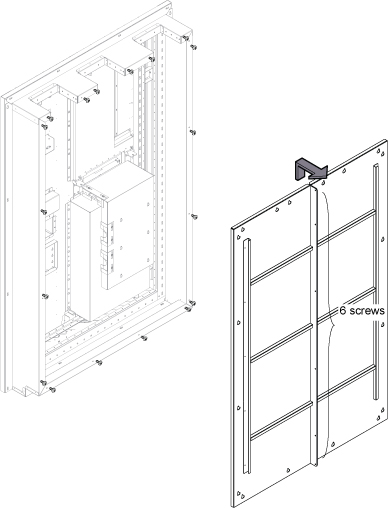
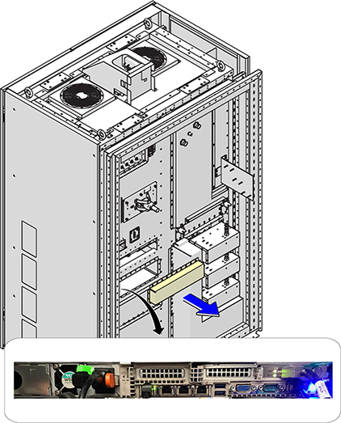
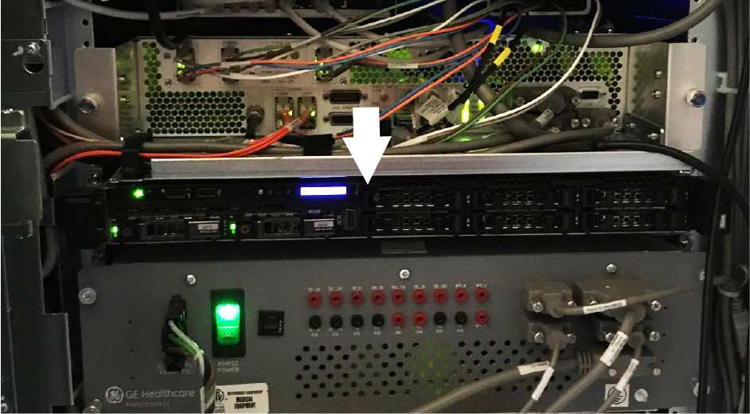
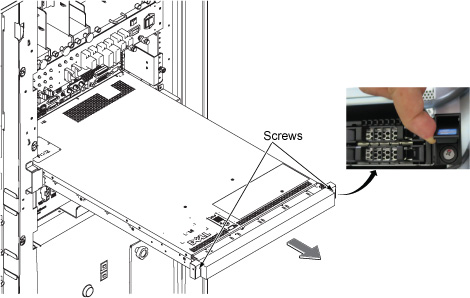

Remove the Image Compute Node (ICN) Gen 5, 6, or 7 to replace it or to replace the ICN power supply.
Procedure
- Make sure that you have read and understood the electrical safety requirements before starting this procedure. See Electrical Safety.
- Apply LOTO to the ISC. See
Applying LOTO - Integrated System Cabinet (ISC).
- Loosen the attachment screws and lift the ISC PW cover a small distance to remove it.
Note If the furnished closet door prevents removal, you can separate the PW cover into two pieces by removing six screws at the center.
Figure 1. ISC PW cover (on the wall site configuration only)
- Remove the rear access cover.
Figure 2. ICN cable removal
- Open the ISC front cover.
Figure 3. Front of ICN (Dell R630 shown)
- Loosen two captive screws under the screw cover.
- Slide the ICN out of the cabinet until the ends of the rails touch the stoppers.
Figure 4. Slide the ICN out